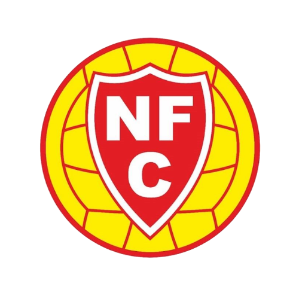
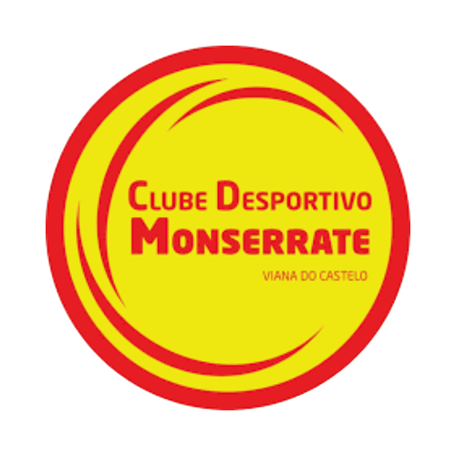
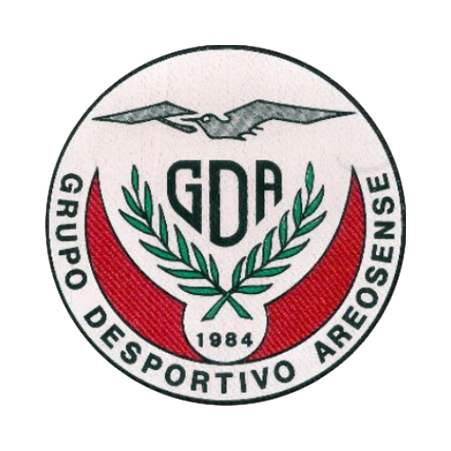
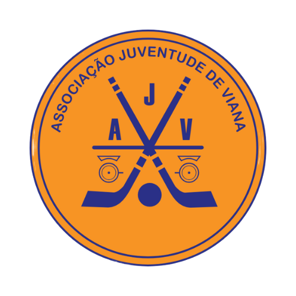
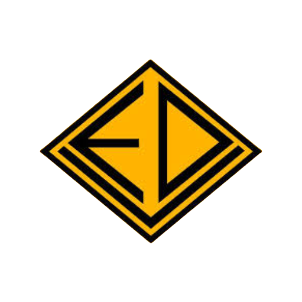
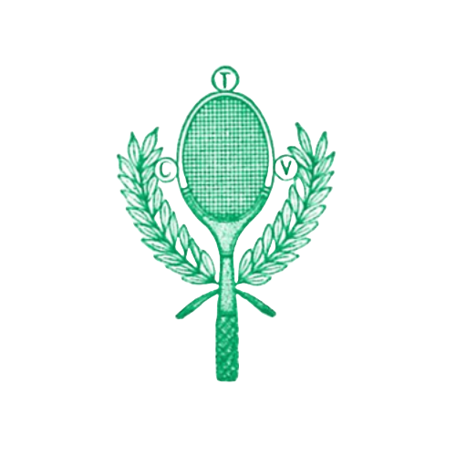
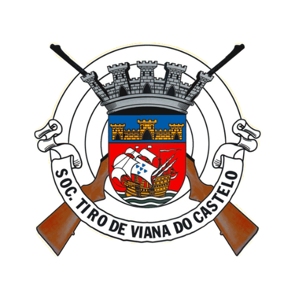
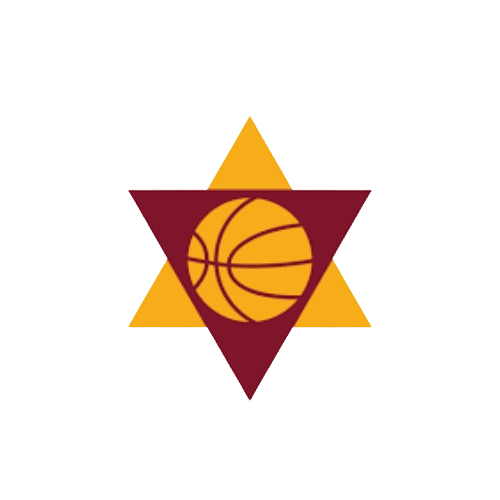
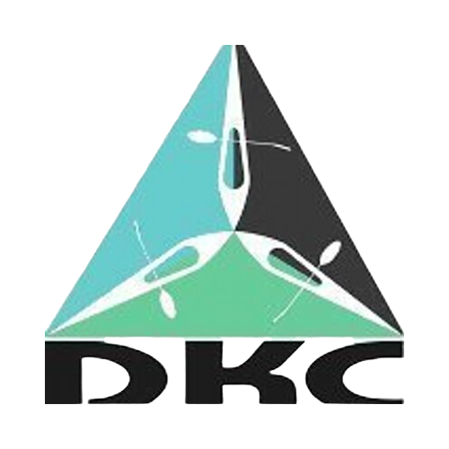
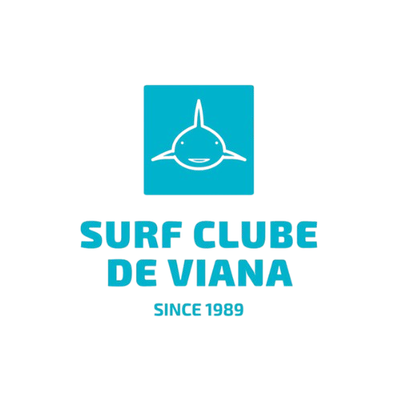

{{ 'Principalmente conhecido pelo futebol, mas também promove outras modalidades como judo, dança desportiva, bilhar e automobilismo.' | translate }}

Neves Futebol Clube
{{ 'Modalidades' | translate }}: {{ 'Futebol' | translate }}

Clube Desportivo de Monserrate
{{ 'Modalidades' | translate }}: {{ 'Diversas, incluindo Futebol' | translate }}

Grupo Desportivo Areosense
{{ 'Modalidades' | translate }}: {{ 'Futebol, Atletismo, Xadrez, Basquetebol, Ciclismo, Andebol e Pesca' | translate }}

Associação Juventude de Viana
{{ 'Modalidades' | translate }}: {{ 'Hóquei em patins' | translate }}

Escola Desportiva de Viana
{{ 'Modalidades' | translate }}: {{ 'Hóquei em patins, esgrima, ginástica, patinagem, trail, triatlo e padel' | translate }}

Sociedade de Tiro de Viana do Castelo
{{ 'Modalidades' | translate }}: {{ 'Ténis e padel' | translate }}

Clube de Basket de Viana
{{ 'Modalidades' | translate }}: {{ 'Basquetebol' | translate }}

Darque Kayak Clube
{{ 'Modalidades' | translate }}: {{ 'Canoagem' | translate }}

Clube de Vela de Viana do Castelo
{{ 'Modalidades' | translate }}: {{ 'Vela' | translate }}

Surf Clube de Viana
{{ 'Modalidades' | translate }}: {{ 'Surf, bodyboard, stand-up paddle' | translate }}